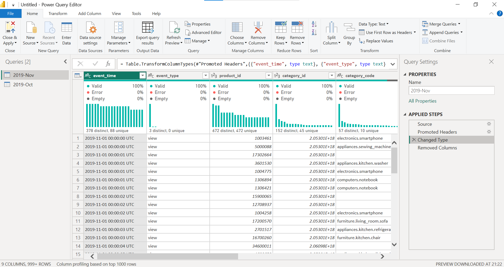
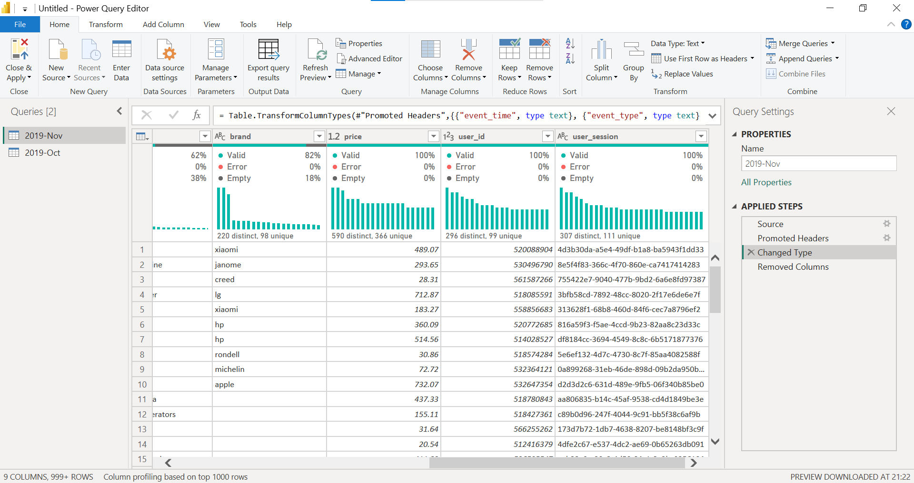
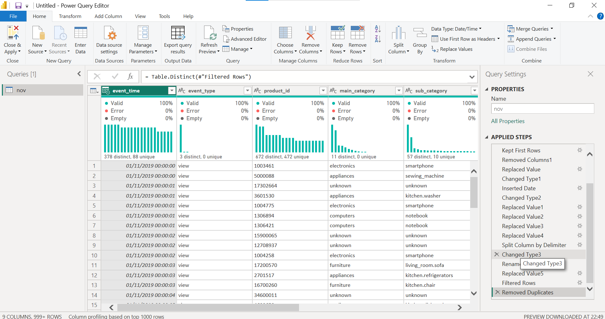
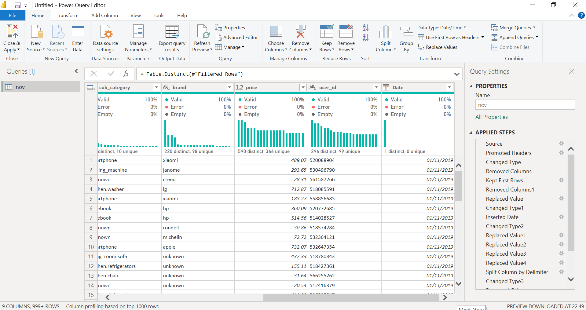

TP03 – Interactive Data Analysis and Visualization with Power BI
1. Dataset
Kaggle dataset eCommerce behavior data from multi-category store (mkechinov), file 2019-Nov.csv.
It is a multi-gigabyte file with tens of millions of events (view, cart, purchase). Power BI Desktop cannot load the whole file
in Import mode on a laptop, so the first 3 million rows were kept in Power Query before loading. These rows cover about
1.5 days (1–2 November 2019).
Source: kaggle.com/datasets/mkechinov/ecommerce-behavior-data-from-multi-category-store
2. Data import and exploration (Task 1)
The raw table has 9 columns: event_time, event_type, product_id, category_id,
category_code, brand, price, user_id and user_session.
In the profiled sample (first 1000 rows), category_code had 38% empty values and brand 18%.
event_time was stored as text ending with “UTC”.

event_time is Text with “UTC”, category_id is numeric, category_code has empty values. Applied steps: Source, Promoted Headers, Changed Type.
brand and category_code contain empty values; user_session is present and not needed.3. Cleaning and transformation (Task 2)
| Problem found | Transformation applied |
|---|---|
| File too large for Import mode | Kept the first 3,000,000 rows (Keep First Rows) |
| Unused columns | Removed user_session and category_id |
event_time is text with “UTC” | Replaced “UTC” by nothing, converted to Date/Time, added a Date column (Date Only) |
| Ids treated as numbers, price as text/number | product_id and user_id set to Text, price set to Decimal Number |
Empty brand and category_code | Replaced empty values by “unknown” (0% empty afterwards) |
category_code holds several levels | Split at the left-most “.” into main_category and sub_category |
| Invalid prices | Filtered rows to keep price > 0 |
| Possible duplicates | Removed duplicate rows (all columns) |
| Unclear table name | Renamed the query 2019-Nov to nov |

event_time is Date/Time, main_category and sub_category are created, all columns show 0% empty. The full list of applied steps is on the right.
brand has no empty values, price is a decimal number, user_id is Text, and the new Date column exists.4. DAX measures and visuals (Tasks 3–5)
Measures: Total Events, Purchases, Revenue (sum of price for purchase events),
Unique Users and Conversion Rate. The dashboard contains three KPI cards (Total Events, Revenue, Unique Users),
a bar chart (Top 10 brands by revenue), a column chart (events by event type), a bar chart (revenue by main category, used instead of a map
because the data has no geographic field), a line chart (purchases per hour), and slicers on event type, main category and brand.

images/dashboard.png and this image will appear here.5. Summary of findings
- I loaded 3 million events from the November 2019 file (about 1.5 days of activity), made by 416K unique users, which generated $13.34M in revenue from purchases.
- Revenue is highly concentrated in a few brands: Apple is first with about $6.4M, followed by Samsung (about $2.7M); Xiaomi, Huawei and LG are far behind.
- Electronics is by far the strongest main category, followed by appliances and computers; the other categories contribute very little.
- Almost all events are views (about 2.9M); purchases are only about 44K (around 1.5% of events), which shows a very steep drop in the conversion funnel.
- Many rows have no brand or category; they were labelled “unknown”, and this group ranks second in revenue by category, so missing data affects the analysis.
- The slicers (event type, main category, brand) update all KPI cards and charts together, which makes it easy to compare brands and categories.
- Limitation: only the first 3 million rows were used, so the hourly trend covers a short period and does not represent the whole month.
6. Files in this repository
TP03.pbix– Power BI reportimages/– screenshots (imported table, cleaned table, final dashboard)TP03_report.html– this report
The raw CSV is not included because of its size; download it from the Kaggle link above.